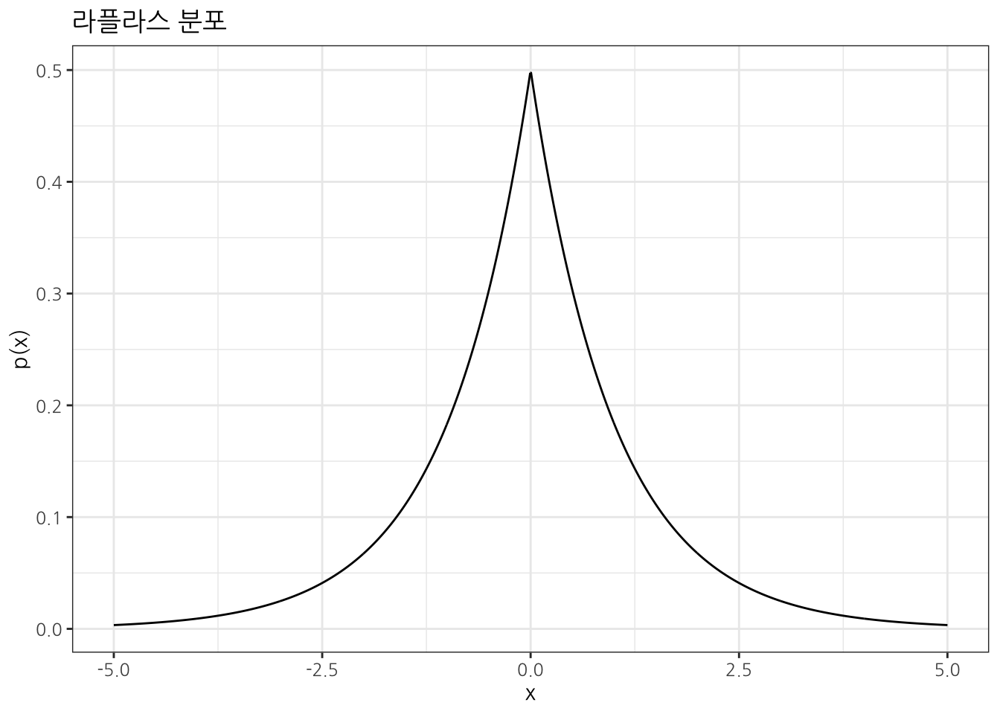
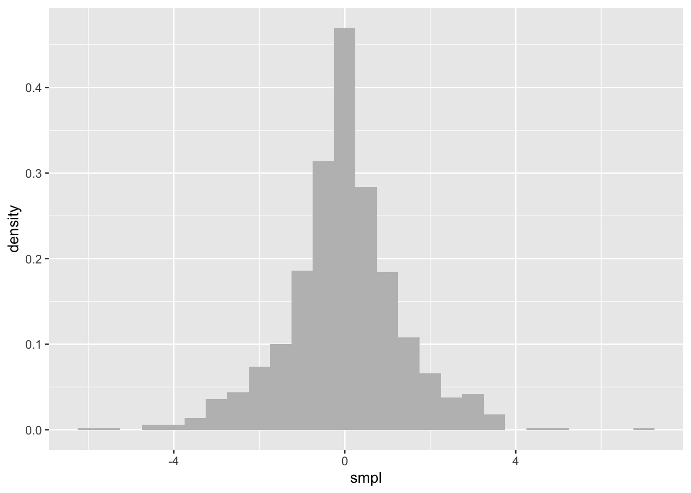

1 차분 프라이버시
차분 프라이버시(Differential Privacy)는 프라이버시를 정량적으로 모델화하여 프라이버시 보호 정도를 측정할 수 있는 기술·방법론으로 데이터의 분포 특성을 유지하여 데이터의 유용성(Utility)은 유지하면서도 개인정보를 보호하기 위해 잡을 추가하는 기법이다. 즉 프라이버시를 일부 희생하면서 원본 데이터와 마찬가지로 높은 정확성을 갖는 특성을 갖도록 데이터를 익명화시키는 것이 중요하다. 왜냐하면, 프라이버시와 데이터의 유용성 즉, 정확도는 상호 주고받는 트레이드 오프(Trade-off)가 존재하기 때문이다.

1.1 DP 얼개
차분 프라이버시를 구현하는 프레임워크로 크게 “지역 모델”과 “Trusted Curator 모델”이 있다.
- 신뢰할 수 있는 큐레이터 모델: 전체 데이터를 취합하여 노이즈 삽입 수준을 결정할 수 있으므로 데이터 유용성과 프라이버시 보호에 있어 효율적이나, 해당 작업을 처리하는 큐레이터를 신뢰해야 한다는 단점이 있다.
- 지역 모델: 개인이 노이즈를 삽입하여 큐레이터에게 전송하므로 신뢰할 수 있는 큐레이터의 존재가 필요하지 않아 개인의 프라이버시를 원천적으로 보호할 수 있어 구글 및 애플에서 채택하고 있다. 그러나 신뢰할 수 있는 큐레이터 모델에 비해 데이터 유용성이 크게 저하될 수 있으며, 현재의 지역 모델에서는 사용자가 임의로 노이즈 삽입 수준을 결정할 수 없다는 단점이 있다.

1.2 외부 공개 정보 위험 [1]
국내 웹 이용자의 대부분이 포털사이트에서 제공하는 뉴스, 카페, 블로그, 웹툰, 영화 등의 서비스와 온라인 커뮤니티에서 제공하는 게시판 서비스를 사용하고 있고 이를 조합하게 되면 특정 사용자를 식별하는게 가능하다. 비식별 데이터를 연계하게 되면 공통 ID를 중심으로 확장된 개인정보 추출 및 복원이 가능하다.

2 비식별화 실패 사례 [2]
개인정보가 가려졌다고 판단되어 공개된 데이터 중 일부는 다양한 비식별화기법에 의해 무용지물이 된 사례가 있다. 대표적으로 거론되는 글로벌 사례로 AOL, Netflix, 마사추세츠 의료기록 데이터베이스가 회자된다.
준식별자(Quasi- identifier, QID)인 우편번호, 성별, 생일 만으로 미국 인구의 87%가 재식별화가 가능함이 Sweeny에 의해 밝혀져 식별자(Identifier, ID)가 제거된 데이터라도 안전하지 않음이 확인되었다. K-익명성은 QID(Quasi-Identifier)로 재식별화를 방지하기 위해서 적어도 해당 그룹에 적어도 K명이 존재하기 때문에 \(\frac{1}{k}\) 만큼의 안정성을 보장한다.
인터넷 미디어 스트리밍 서비스를 제공하는 넷플릭스(Netflix)는 사용자들의 성향을 분석해 보다 나은 미디 어 추천 서비스를 제공하기 위해 기존의 모델을 통해 비식별화 된 데이터를 공개하고 이를 이용해 가장 효율 적인 추천 시스템을 만든 팀에게 100만 달러를 수여하 는 Netflix prize를 개최하였다. 하지만 이는 동일한 서비스를 제공하는 IMDB사에서 공개한 비식별화 된 데이터베이스와의 연결(linkage)로 인해 재식별화가 가능함이 발견되었다. [3]
메사추세츠 보험 위원회(Massachusetts Group Insurance Commission, GIC)의 비식별화 된 의료기록 데이터 베이스 역시 유권자 등록 데이터베이스와의 연결로 인해 재식별화 되었다.[4]
교차검색을 통한 재식별화의 가능성을 차단하지 못하고 AOL은 심각한 실수를 저질렀다. ‘재식별화’는 비식별화된 정보를 조합, 분석 또는 처리하는 과정에서 개인정보가 재생성 되는 것을 말한다. 뉴욕타임즈의 기자 2명이 AOL이 대중에 공개된 검색기록을 검토한 뒤 이것을 사용 가능한 다른 데이터와 교차검토하여 검색사용자의 신원 찾아낸 것이다. [5]
3 수식1
\(x\)명에 대한 차이가 있는 \(D_1\), \(D_2\) 데이터셋에 대해 \(\mathcal{A}\) 알고리즘이 \(\epsilon\) 차분 프라이버시를 제공한다고 다음과 같이 정의한다.
\[\Pr[\mathcal{A}(D_1) \in S] \leq \exp\left(\epsilon\right) \cdot \Pr[\mathcal{A}(D_2) \in S]\] 직관적으로 \(\epsilon\)이 0이 되면 \(\exp\left(\epsilon\right) = 1\) 이 되어 전혀 프라이버시가 보장되지 않는 상황이 되고 그 반대로 큰 값을 갖게 되면 식별이 더 어렵게 되는 특성을 갖게 된다.
3.1 라플라스 분포
rmutil 팩키지에서 라플라스 분포 특성을 살펴보자. 중심 모수는 \(\mu\), 형태 모수(shaping)는 \(s\) 가 된다.
library(tidyverse)
x_seq_vec <- seq(-5, 5, length=1000)
y_laplace_den <- rmutil::dlaplace(x_seq_vec, m = 0, s = 1)
laplace_tbl <- tibble(x = x_seq_vec,
y = y_laplace_den)
laplace_tbl %>%
ggplot(aes(x= x, y= y)) +
geom_line() +
theme_bw(base_family = "NanumGothic") +
labs(x = 'x', y = 'p(x)', title = "라플라스 분포")
중심 모수 \(\mu\) 가 0, 형태 모수 \(s\) 가 1 인 라플라스 분포에서 난수를 1,000개 추출해보자.
laplace_smpl_tbl <- tibble( smpl = rmutil::rlaplace(1000, m = 0, s =1) )
laplace_smpl_tbl %>%
ggplot(aes(x = smpl)) +
geom_histogram(aes(y = ..density..), fill = "grey", binwidth = 0.5)
4 diffpriv
SAHI 과정에 포함된 Lab 과제를 살펴보자.
library(diffpriv)
all_result <- read_csv("data/hiv_result_test.csv")
dataset <- all_result$is_hiv
query <- function(n){
p <- sum(dataset[1:n])/n
return(p)
}
dp_query <- function(n, epsilon, sensitivity) {
mechanism <- DPMechLaplace(target = query, sensitivity = sensitivity, dims = 1)
pparams <- DPParamsEps(epsilon = epsilon)
r <- releaseResponse(mechanism = mechanism, privacyParams = pparams, X = n)
return(r$response)
}
n <- 99
normal_res <- query(n)
private_res <- dp_query(n, 1, 1/n)
cat("query(", n, ")\n")query( 99 )cat("Private response :", private_res, "\nNon-private response : ", normal_res, "\n")Private response : 0.5004064
Non-private response : 0.5050505 기본기
데이터 과학자 이광춘 저작
kwangchun.lee.7@gmail.com